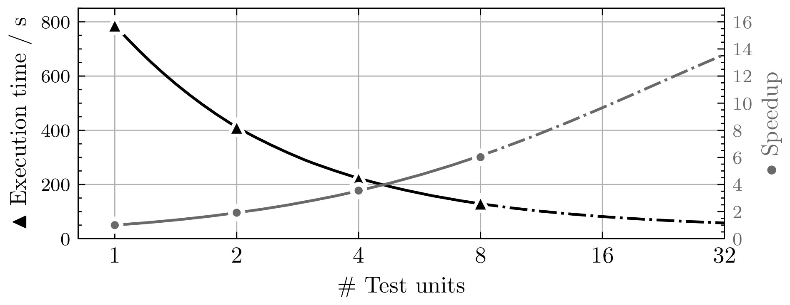

Testsystem
ATTEST is a python-based test system for the Real-Time Operating Systems course at the Institute of Technical Informatics. It was revised from scratch in the winter term of 2022 to improve its performance and functionality. The system utilizes special external hardware for testing to guarantee precise and reliable results. It is firmly git-oriented to embed its functionality in the best possible way.
Structure
This section briefly summarizes the directory structure of the test system. There are two directory trees, the source tree and the working tree. The Repository Structure is the source directory tree and contains the code, documentation, software, and tools required to run the test system. The System Structure is the working directory tree used by the running test system.
Repository Structure
The following section provides an overview of the repository structure with a short description of the purpose.
/ : Repository root
├── .devcontainer
| └── devcontainer.json : Devcontainer configuration
├── .vscode : Tasks and settings for VS Code as IDE
├── doc : Documentation source files
├── software : Libraries and tools required to run the test system
├── testcases : Source for test cases used by the test system
├── tests : Test cases used to test the test system
├── testsystem : Test system python package
├── .coveragerc : Configuration for coverage report
├── bootstrap.sh : Test system bootstrap script
├── conf.py : Sphinx configuration (Documentation generation)
├── index.rst : Documentation root
├── main.py : Test system main; Starts/runs the test system
└── Makefile : Sphinx make to build documentation
System Structure
This section covers the system directory structure in greater detail. The system structure is different than the repository structure and is used by the running test system. The following tree depicts the used directories inside the docker container.
/ : Container root directory
├── git : Directory for local git clones
| ├── RTOS_Public_SSXX : Clone of public repository
| ├── groups : Directory for local group clones
| | ├── RTOS_SSXX_Group01 :
| | ├── RTOS_SSXX_Group02 :
| | └── ... :
| └── sys : Clone of system repository (Report repo)
├── host : Shared directory with host for config, db, logs
| ├── config.json : Test system configuration
| ├── testsystem.db : Test system database
| └── testsystem.log : Test system logs
├── root/.ssh : Shared directory with host for git ssh key
├── testcases : Directory of test case definitions
| ├── output : Directory for test case outputs
| | └── <test_id>.txt : Output as txt file for specific testcase
| ├── testbenches : Source directory of test cases
| | └── <test_id> : Source directory for specific test case
| | ├── Makefile :
| | └── ... :
| └── testcases.txt : List of test case configurations
├── testenv : Working directory for the testsystem
| └── <commit_hash> : Test environment for a specific group on a
| | : specific commit for a specific test case
| ├── RTOS_Public_SSXX : Copy of the public repository
| | └── apps/testbenches :
| | └── <test_id> : Copy of test case source directory
| └── RTOS_SSXX_GroupYY : Shadow copy of group repository
└── testsystem : Contains the test system
├── doc : Documentation source
├── tests : Unit and integration tests
├── testsystem : Test system python package
├── conf.py : Sphinx configuration
├── index.rst : Documentation root
├── main.py : Entry point for the test system
└── Makefile : Sphinx make to build documentation
Building the docker container creates the directory testcases and testsystem. The sources for these directories are the directories of the same name in the test system repository. Once started, the test system will create the git and testenv directories as needed.
Docker
The RTOS test system is supposed to run as a docker container. An essential aspect to
consider is that the test system needs access to the USB and COM ports of the host
system to communicate with the MSP boards and the PicoScopes. Docker provides the
--device option to map host devices to a container. The disadvantage is that the
device option requires a list of specific ports on startup and does not support a
wildcard or mapping the whole /dev directory. This restriction makes it impossible for
the test system to discover new hardware on its own. The test system can only use the
devices provided by the docker run command and therefore needs a restart every time a
new device is added.
Build and Run
The following command builds the test system image. Building the image can take a while because it needs to compile the libmsp library from scratch.
docker build -t attest:latest .
To check if the setup works, run the hello testsystem program. This is the hello world equivalent of the test system. It should greet you with basic information about the installation and a confirmation message that everything is working fine. The hello testsystem program is also handy for checking if the MSPs and PicoScopes are detected. They will show up in the log.
docker run --rm -t -v "$(pwd)":/host attest:latest python3 main.py --hello-testsystem
Note
To check if the test system detects the hardware, add the respective ports with the
--device option (e.g.: --device=/dev/ttyACM0 --device=/dev/ttyACM1
--device=/dev/bus/usb/001/003)
To start the test system, run the main.py without an additional parameter. Docker needs a volume on the host system to permanently store the config, database, and logs. The default configuration of the test system is that it uses the /host directory for those files. So make sure this directory is mounted somewhere in the host system.
docker run --rm -v "$(pwd)":/host -t attest:latest python3 main.py
Other Docker Commands
Display available commands from the test system:
docker run --rm -t attest:latest python3 main.py --help
Get a list of all MSPs and PicoScopes that have ever been connected to the test system:
docker run --rm -v "$(pwd)":/host -t attest:latest python3 main.py --list-devices
Set the display name for a device. This name is for example shown in the system report:
docker run --rm -v "$(pwd)":/host -t attest:latest python3 main.py --set-name <SN> <NAME>
Build documentation:
docker run --rm -t \
-v "$(pwd)":/host attest:latest \
bash -c "make html && cp -R _build/html /host/documentation"
Run unit tests:
docker run --rm -t attest:latest pytest tests/unit_tests
To successfully run integration tests, make sure to use the correct device paths for MPS and PicoScope. The following command runs integration tests with one test unit:
docker run --rm -t \
--device=/dev/ttyACM0 \
--device=/dev/ttyACM1 \
--device=/dev/bus/usb/001/003 \
attest:latest pytest tests/integration_tests
Hardware
The test system uses external hardware to run groups’ test cases. It utilizes two types
of hardware, microcontroller boards, and oscilloscopes, which are connected pairwise to
form test units. A test unit consists of a microcontroller board running the real-time
operating system test case and an oscilloscope where at least one channel is connected
to a board pin to measure output signals. Which pin-to-channel connections are required
depends on the test case implementation. If this changes due to additional test cases,
update the testsystem.config.Config.tu_connections property in the
configuration to tell the test system which connections are required for a valid test
unit.
Note
The current implementation requires a connection from MSP port 6 pin 0 to digital channel 7 on the PicoScope. P6.0-D7
MSP430
The test system uses MSP-EXP430F5529LP microcontroller boards to run the test cases for
the groups. Test cases are built by make and the msp-gcc compiler. Flashing test cases
onto the microcontrollers is handled by the MSP430Flasher. The source for both tools
lies in the software directory of the repository. They are installed when building the
docker container. The test system runs these as external tasks and processes their
output. It uses the run_external_task() as a unified
interface to external tools.
MSP boards connect to COM ports. The name of these ports starts with ttyACM followed by a consecutive number. Each MSP exposes two COM ports: a UART port, and a debug port.
Note
New COM ports reuse free ttyACM devices. Reused COM ports allow the test system to detect new MSPs without a restart when the device was already mapped into the container.
PicoScope
The test system uses PicoScope 2205A MSP 2-channel USB oscilloscopes. The PicoScopes are primarily used to measure timing on real-time operating system tasks. Pico Technology, the manufacturer of the PicoScope, provides an extensive C API to their oscilloscopes with sufficient documentation and numerous examples. In addition to the C API, they develop the PicoSDK, a python wrapper to the C API functions.
PicoScopes connect as USB devices. USB devices usually do not reuse unused device
numbers. They can be discovered by using the lsusb command. The output of this
command looks similar to this:
...
Bus 001 Device 003: ID 0ce9:1016 Pico Technology PicoScope 2000
...
Note
PicoScopes have an annoying behavior when newly connected to a PC. On the first connection, it disconnects and reconnects as a new USB device. This makes it impossible to use the PicoScope after it is initially connected to a PC because it uses a new port that was unavailable when the docker container started. This happens only on the first connection. Restarting the host PC does not retrigger this behavior as long as the scope stays connected.
Bootstrap Script
The bootstrap script automates the build and start of the production test system with a MySQL database.
The test system needs access to the PicoScopes and MSP430 boards connected via USB to the host.
The script builds the test system container if it does not exist,
discovers device connections present at the host,
and starts the test system container and a persistent database.
It generates a docker-compose file from the docker-compose-template.yml,
which is used to start the containers with the correct configuration.
The script runs the docker-compose in detached mode.
That means the test system no longer uses the terminal after the build process and runs in the background.
To reattach the terminal to the test system, use the following command:
docker attach --sig-proxy=false attest
The previous command only shows the test system output. By pressing CTRL + C, the
terminal gets detached, but the test system continues in the background. To terminate
the test system, either set --sig-proxy to true when attaching or set the
stop property in the configuration.
You can add an arbitrary number of arguments when calling the bootstrap script. These arguments are forwarded to the test system container (exceptions in the following table). For example, you can call the test systems help menu directly with the bootstrap script:
./bootstrap.sh --help
The arguments in this table are an exception to those passed to docker. They will be handled directly by the bootstrap script. You can combine them with an arbitrary number of other arguments you want to pass to the test system. The order does not matter; the bootstrap script handles arguments from the table, and all others are passed down to docker.
Arguments |
Description |
|---|---|
--dockerfile filepath |
Use a specific dockerfile with the bootstrap script. E.g. a custom environment for your test system. |
Group Testing
Groups will be tested when they push new commits to the primary branch
(git_primary_branch_name). The scheduler
periodically checks the student repositories for new commits and schedules test case
tasks if a new commit is present. The interval in which a student repository is checked
for new commits is not constant and depends on how busy the test system is. When a new
commit is detected and scheduled for testing, the test system won’t recheck the group
until the test run is completed. This is to stay caught up on work and deliver
up-to-date results when the test system has high utilization. The force test tags
feature allows the specification of tags that will be tested anyways. This is to ensure
test results for commits that definitely require a test report. Submission commits, for
example. These tags can be configured with the
force_test_tags property.
Task Scheduling
The scheduling thread handles task scheduling on the test system. This thread runs asynchronously to the worker threads, which execute the tasks assigned by the scheduler. Each task has a priority (lower values have higher priority) and, optionally, a fixed test unit it should run on. Each test case for a group and a commit is scheduled as an individual task. Test case tasks for a test run are not set to a specific test unit and can run on any test unit. This, in combination with group priorities, results in all test units being used for a single group until the test run is finished. Then the next group will use all test units for its test run.
Note
If a test case task fails because of an external error (e.g., MSP430Flasher not responding), the task is scheduled again with a priority of 9. The default priority range for test case tasks is 10 to 20.
The scheduler periodically checks the group repositories for new commits and, if
available, schedules test case tasks based on the current exercise configuration
exercise_nr for execution. Only the most recent
commit will be scheduled, and new commits will be considered once the test run is
finished. The following timing example should clarify which commits will be scheduled
and tested by the test system:
Group Test system
├─ Commit C1 |
├─ Commit C2 |
| ├─ Test system is started
| ├─ Start testing C2
├─ Commit C3 ├─ Testing C2 ...
├─ Commit C4 ├─ Testing C2 ...
├─ C2 Report available ├─ Finished testing C2
| ├─ Start testing C4
Priorities
The following table lists the used task priorities from high priority to low priority.
Priority Value |
Description & Usage |
|---|---|
5 |
Priority for legacy tasks. All tasks in the queue at the time of a priority reset get this priority assigned no matter what their previous value was. |
9 |
If a task fails because a test unit stopped responding and the test case timed out, the task will be rescheduled with this priority. |
10 - 20 |
Priority range used for group test case tasks. The priority is computed based on the time the group spent waiting in the queue. |
25 |
Used for tagged commit tests. Commits tagged with a force test tag (specified in configuration) will used this priority. |
Logging
The test system has two different logging providers configured: terminal logging and
file logging. The system prints all logs with priority INFO or higher to the terminal to
give a live view of the test systems actions. Additionally to the terminal, the logs are
written to a log file. File logging is customizable by setting
log_file and
log_level, which sets the destination and level,
respectively.
Parallelization
Using multiple test units allows parallelizing test case tasks and, therefore, enables horizontal scaling of the test system. The following table and figure show how the number of test units affects the execution. The tests were run with a single group, a working final OS submission, and all 57 test cases.
# TUs |
Exec. time (s) |
Speedup |
Speedup (previous) |
Parallelization portion (Amdahl’s law) |
|---|---|---|---|---|
1 |
788 |
- |
- |
- |
2 |
411 |
1.92 |
1.92 |
0.958 |
4 |
222 |
3.55 |
1.85 |
0.958 |
8 |
131 |
6.02 |
1.69 |
0.953 |
The following figure depicts the possible speedup and execution time based on the number of test units and a parallelization factor of 0.956 (average from measurements). The blue curve shows the calculated speedup according to Amdahl’s law, and the green curve depicts the expected execution time for a test run with all 57 test cases. The number of test cases also marks the upper bound for the number of test units because a test case is the smallest possible undividable unit of work in this context.
Contribution & Development
The recommended way for developing the test system is by using VSCode and the
development container feature. The project contains a dev container configuration for
VSCode to make contributions as easy as possible. To start the dev container, press
CTRL + SHIFT + P, type Dev Containers: Open Folder in Container... and
select the cloned test system directory. The dev container configures the environment,
includes all the required packages, and contains some useful VS Code extensions for
development. If test units are available, add the respective devices to the runArgs
section in the .devcontainer file and restart the container by typing Dev
Containers: Rebuild Container into the VSCode Command Palette.